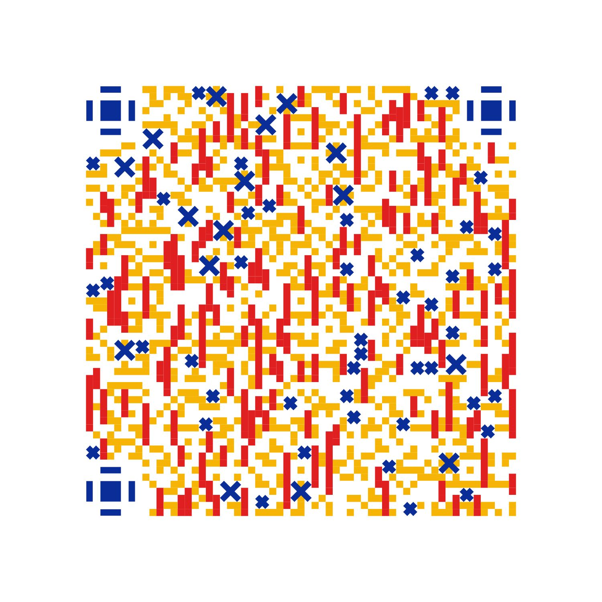

Explore
Discover culturally distinctive and everyday sounds around the world.
Melotrip connects the sounds a place shares with the memories a traveller collects—then turns both into a personal, editable soundtrack.
Connect the mobile experience ↓Discover culturally distinctive and everyday sounds around the world.
Pair travel photographs with environmental recordings on mobile.
Shape personal and community materials inside the Creation Universe.
Save a journey melody as a travel soundtrack, ringtone or shared memory.
Record the sounds of a journey on mobile, attach them to photographs, and securely continue editing on the desktop.

AI can analyse sound character, suggest transitions and reveal connections. Every material, edit and final decision remains under the traveller’s control.